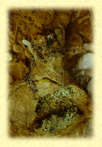

Etymological roots are indicated by the sign ç.
Language groups are as follows: SKT: Sanscrt; E: Egyptian; HB: Hebrew; GK:
Greek; L: Latin; AS: Anglo Saxon; ME: Middle English; OHG: Old High
German; G: German; OFR: Old French; FR: French; IT: Italian; ICL:
Icelandic; N: Nordic; SW: Swedish.
 The body is soft, flabby, putrid. It withers and falls away. Its a carcass sheathing carrion. It rots and flows, like rain; is consumed in the fluid and tidal, the lunar and the menstrual. See HB: nabel = wilt, wither, fall away; nabal = wicked; nebelah = flabby, carcass, carrion; nidneh - from nadan = body as a sheath (for the soul) - and HB: yarek = to be soft, loins, shaft, side, thigh, body parts; yerek = vacuity (of colour), pallid green, grass, vegetation; yara = flow as water, rain; yerach = lunation, month; yaresh = to occupy, seize, possess; to consume, destroy.